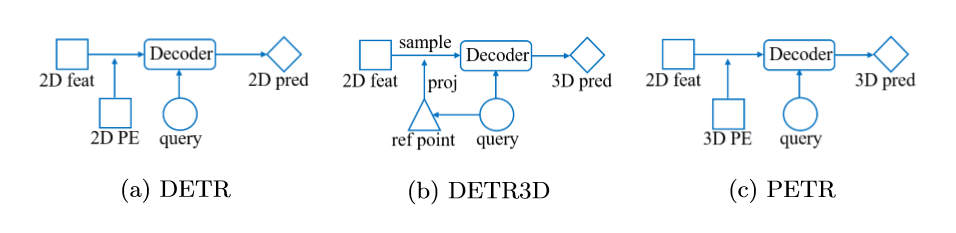
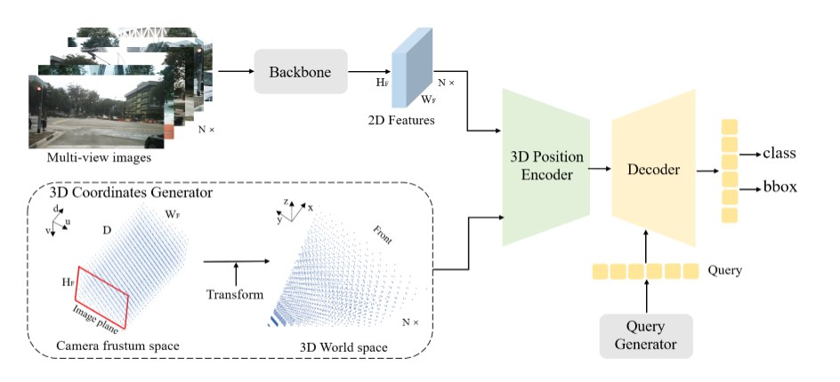
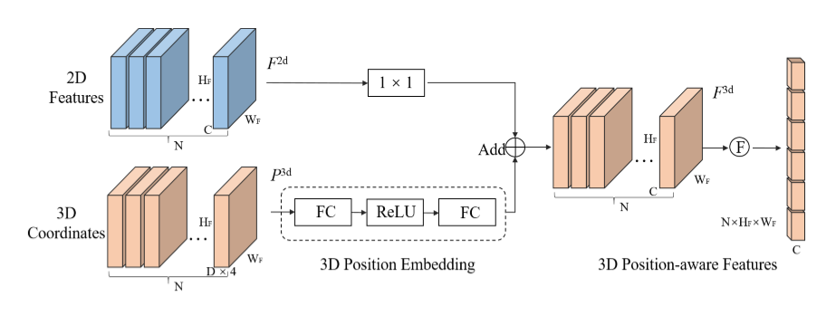
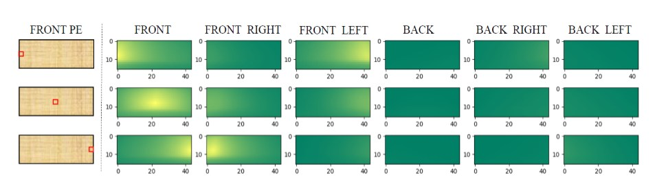
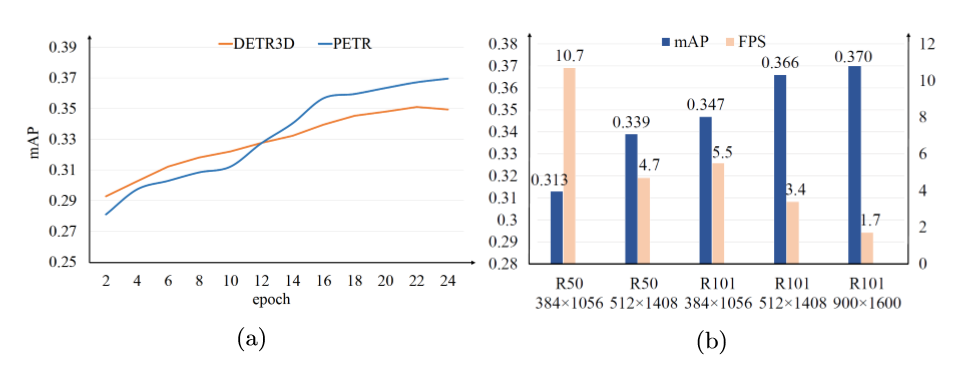
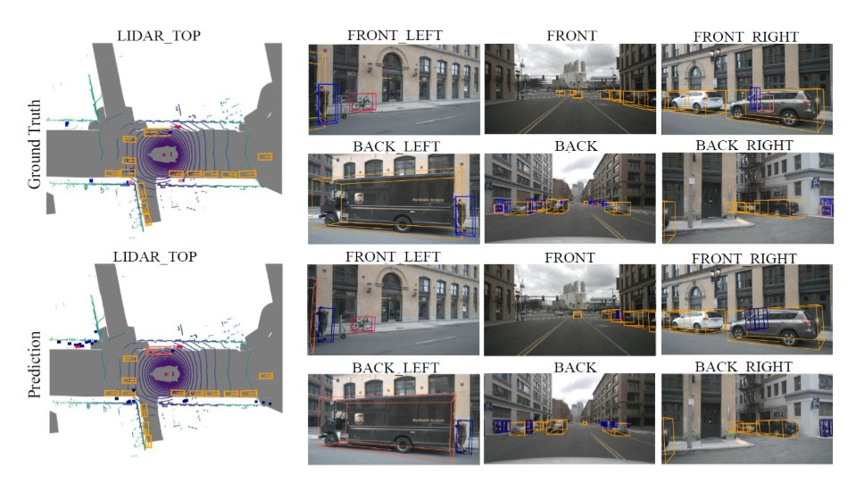
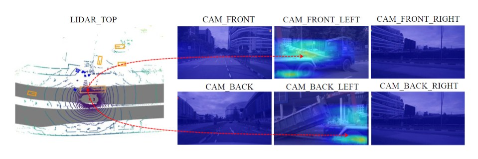
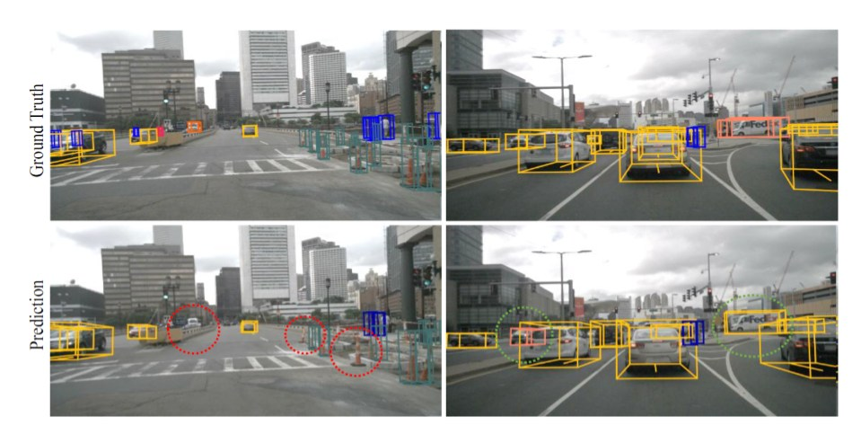

目次
PETR: Position Embedding Transformation for Multi-View 3D Object Detection
Yingfei Liu⋆、Tiancai Wang⋆、Xiangyu Zhang、Jian Sun
MEGVII Technology
{liuyingfei,wangtiancai,zhangxiangyu,sunjian}@megvii.com
arXiv:2203.05625v3 [cs.CV]、2022年7月19日
脚注⋆：同等の貢献。
翻訳について：原文 PDF は
08_PETR_2203.05625.pdf（全 18 ページ）。本文、図の説明、図中ラベル、表、脚注、付録を訳出し、論文タイトルと参考文献は原文のまま掲載。図は原図を掲載し、英語ラベルの日本語訳を併記した。数式・数値・引用番号・コードの識別子は原文を維持。原文の記述に関する補足は「訳注」と明示し、本文と区別している。
要旨
本論文では、多視点 3D 物体検出のための位置埋め込み変換（position embedding transformation; PETR）を開発する。PETR は 3D 座標の位置情報を画像特徴へ符号化し、3D 位置認識特徴（3D position-aware features）を生成する。オブジェクトクエリはこの 3D 位置認識特徴を知覚し、エンドツーエンドの物体検出を行うことができる。PETR は標準的な nuScenes データセットにおいて最先端の性能（50.4% NDS および 44.1% mAP）を達成し、ベンチマークで第 1 位にランクされている。PETR は今後の研究のための、単純でありながら強力なベースラインとして役立ちうる。コードは https://github.com/megvii-research/PETR で公開されている。
キーワード：位置埋め込み、Transformer、3D 物体検出
1 はじめに
多視点画像からの 3D 物体検出は、自動運転システムにおいて低コストであることから魅力的である。先行研究［6,33,49,34,48］は主に単眼物体検出の観点からこの問題を解いてきた。近年、DETR［4］はエンドツーエンド物体検出への貢献により大きな注目を集めている。DETR［4］では、各オブジェクトクエリが 1 つの物体を表し、Transformer デコーダ内で 2D 特徴と相互作用して予測を生成する（図1(a) 参照）。DETR［4］の枠組みを単純に拡張した DETR3D［51］は、エンドツーエンド 3D 物体検出に対する直感的な解法を提供する。オブジェクトクエリによって予測された 3D 参照点が、カメラパラメータによって画像空間へ逆投影され、すべてのカメラビューから 2D 特徴をサンプリングするために用いられる（図1(b) 参照）。デコーダはサンプリングされた特徴とクエリを入力として受け取り、オブジェクトクエリの表現を更新する。
しかし、DETR3D［51］におけるこのような 2D から 3D への変換は、いくつかの問題をもたらしうる。第一に、予測された参照点の座標はそれほど正確でない可能性があり、サンプリングされた特徴が物体領域の外に出てしまう。第二に、投影点における画像特徴のみが収集されるため、大域的な視野からの表現学習を行うことができない。また、複雑な特徴サンプリング手順は、検出器の実用化を妨げる。したがって、オンラインでの 2D から 3D への変換や特徴サンプリングを伴わないエンドツーエンド 3D 物体検出の枠組みを構築することは、依然として残された課題である。

図1：DETR、DETR3D、および提案する PETR の比較。(a) DETR では、オブジェクトクエリが 2D 特徴と相互作用して 2D 検出を行う。(b) DETR3D は、生成した 3D 参照点を画像平面へ繰り返し投影し、2D 特徴をサンプリングしてデコーダ内でオブジェクトクエリと相互作用させる。(c) PETR は、3D 位置埋め込み（3D PE）を 2D 画像特徴へ符号化することで 3D 位置認識特徴を生成する。オブジェクトクエリは 3D 位置認識特徴と直接相互作用し、3D 検出結果を出力する。
図中ラベル：2D feat＝2D 特徴、2D PE＝2D 位置埋め込み、3D PE＝3D 位置埋め込み、query＝クエリ、Decoder＝デコーダ、2D pred／3D pred＝2D 予測／3D 予測、sample＝サンプリング、proj＝投影、ref point＝参照点
本論文では、3D 物体検出のための DETR［4］に基づく単純で洗練された枠組みの開発を目指す。我々は、多視点からの 2D 特徴を 3D を認識した特徴へ変換できないかと考えた。そうすれば、オブジェクトクエリを 3D 環境のもとで直接更新できる。本研究は、陰的ニューラル表現（implicit neural representation）における進展［17,8,32］に着想を得ている。MetaSR［17］および LIFF［8］では、高解像度（HR）の座標情報を低解像度（LR）特徴へ符号化することで、LR 入力から HR の RGB 値を生成する。本論文では、3D 位置埋め込みを符号化することにより、多視点画像からの 2D 特徴を 3D 表現へ変換することを試みる（図1(c) 参照）。
この目標を達成するため、まず異なるビュー間で共有されるカメラ視錐台空間をメッシュグリッド座標へ離散化する。次に、その座標を各カメラのパラメータによって変換し、3D ワールド空間の座標を得る。そして、バックボーンから抽出した 2D 画像特徴と 3D 座標を単純な 3D 位置エンコーダへ入力し、3D 位置認識特徴を生成する。3D 位置認識特徴は Transformer デコーダ内でオブジェクトクエリと相互作用し、更新されたオブジェクトクエリはさらに物体のクラスと 3D バウンディングボックスの予測に用いられる。
提案する PETR アーキテクチャは、DETR3D［51］と比較して多くの利点をもたらす。元の DETR［4］のエンドツーエンドの精神を保ちつつ、複雑な 2D から 3D への投影と特徴サンプリングを回避する。推論時には、3D 位置座標をオフラインで生成し、追加の入力位置埋め込みとして用いることができる。これは実用化にとって比較的容易である。
まとめると、我々の貢献は以下のとおりである。
- 多視点 3D 物体検出のための、PETR と呼ぶ単純で洗練された枠組みを提案する。3D 座標を符号化することで、多視点特徴を 3D ドメインへ変換する。オブジェクトクエリは 3D 位置認識特徴と相互作用することで更新され、3D 予測を生成できる。
- 多視点 3D 物体検出のための新しい 3D 位置認識表現を導入する。3D 位置情報を 2D 多視点特徴へ符号化するための単純な陰関数を導入する。
- 実験により、PETR が標準的な nuScenes データセットにおいて最先端の性能（50.4% NDS および 44.1% mAP）を達成し、3D 物体検出のリーダーボードで第 1 位にランクされることを示す。
2 関連研究
2.1 Transformer に基づく物体検出
Transformer［47］は、長距離依存関係のモデル化に広く適用されている注意機構ブロックである。Transformer では通常、特徴に位置埋め込みが加算され、これにより画像［13,53,27］、系列［15,47,11,10,54］、動画［1,24,52］の位置情報が与えられる。Transformer-XL［10］は、トークン対の相対距離を符号化するために相対位置埋め込みを用いる。ViT［13］は、異なるパッチ間の距離を符号化する学習済み位置埋め込みをパッチ表現に加算する。MViT［24］は、相対位置埋め込みの距離計算を分解し、時空間構造をモデル化する。
近年、DETR［4］は Transformer を 2D 物体検出タスクに導入し、エンドツーエンドの検出を実現した。DETR［4］では、各物体はオブジェクトクエリとして表現され、Transformer デコーダを通じて 2D 画像特徴と相互作用する。しかし、DETR［4］は収束が遅いという問題を抱えている。［44］は収束の遅さの原因をクロス注意機構に帰し、エンコーダのみの DETR を設計した。さらに、多くの研究が位置の事前情報を加えることで収束を加速している。SMAC［14］は、各クエリに対する空間的事前情報として 2D ガウス状の重みマップを予測する。Deformable DETR［58］は、オブジェクトクエリを 2D 参照点に対応付け、疎な相互作用を行う変形可能クロス注意（deformable cross-attention）を提案する。［50,30,26］は、高速な収束のために位置の事前情報を用いるアンカー点またはアンカーからオブジェクトクエリを生成する。DETR［58］（訳注：原文の引用番号のまま。［58］は Deformable DETR）を拡張した SOLQ［12］は、オブジェクトクエリを用いて分類、ボックス回帰、インスタンスセグメンテーションを同時に行う。
2.2 視覚に基づく 3D 物体検出
視覚に基づく 3D 物体検出とは、カメラ画像から 3D バウンディングボックスを検出することである。多くの先行研究［6,33,20,21,41,19,2,49,48］は画像ビュー上で 3D 物体検出を行う。M3D-RPN［2］は深度認識畳み込み（depth-aware convolution）を導入し、3D 物体検出のための位置認識特徴を学習する。FCOS3D［49］は 3D の正解を画像ビューへ変換し、FCOS［46］を拡張して 3D 直方体のパラメータを予測する。PGD［48］は FCOS3D［49］を踏襲し、確率的表現を用いて深度の不確実性を捉える。これは深度推定の問題を大きく緩和する一方で、より多くの計算コストとより大きな推論遅延をもたらす。DD3D［34］は、大規模深度データセットでの深度事前学習が 3D 物体検出の性能を大幅に向上させうることを示している。
近年、いくつかの研究は 3D ワールド空間で 3D 物体検出を行おうとしている。OFT［39］と CaDDN［38］は、単眼画像特徴を鳥瞰図（BEV）へ写像し、BEV 空間で 3D 物体を検出する。ImVoxelNet［40］は 3D ワールド空間に 3D ボリュームを構築し、多視点特徴をサンプリングしてボクセル表現を得る。そして 3D 畳み込みとドメイン固有のヘッドを用いて、屋内・屋外の両方のシーンで物体を検出する。CaDDN［38］と同様に、BEVDet［18］は Lift-Splat-Shoot［37］を用いて 2D 多視点特徴を BEV 表現へ変換する。BEV 表現に対して、CenterPoint［55］ヘッドを用いて直感的な方法で 3D 物体を検出する。DETR［4］にならい、DETR3D［51］は 3D 物体をオブジェクトクエリとして表現する。オブジェクトクエリから生成された 3D 参照点は、すべてのカメラビューへ繰り返し逆投影され、2D 特徴をサンプリングする。
BEV に基づく手法は Z 軸方向の誤差を生じやすく、他の 3D を意識したタスク（例：3D 車線検出）で性能が低くなる。DETR に基づく手法は、より多くの学習時データ拡張を伴うエンドツーエンドのモデル化から、より多くの恩恵を受けられる。我々の手法は DETR に基づき、単純かつ効果的な方法で 3D 物体を検出する。3D 位置情報を 2D 特徴へ符号化し、3D 位置認識特徴を生成する。オブジェクトクエリは、投影誤差なしにこのような 3D 位置認識表現と直接相互作用できる。
2.3 陰的ニューラル表現
陰的ニューラル表現（INR）は通常、多層パーセプトロン（MLP）によって座標を視覚信号へ写像する。これは 3D 物体［35,9,31］、3D シーン［32,43,5,36］、2D 画像［17,8,45,42］をモデル化するための高効率な方法である。NeRF［32］は全結合ネットワークを用いて特定のシーンを表現する。新規視点を合成するために、カメラ光線に沿った 5D 座標をクエリとしてネットワークに入力し、体積密度と視点依存の放射輝度を出力する。MetaSR［17］と LIFF［8］では、HR 座標を LR 特徴へ符号化し、任意サイズの HR 画像を生成できる。我々の手法は、INR の 3D 物体検出への拡張とみなすことができる。2D 画像を 3D 座標で符号化して 3D 位置認識特徴を得る。3D 空間のアンカー点は MLP によってオブジェクトクエリへ変換され、さらに 3D 位置認識特徴と相互作用して対応する 3D 物体を予測する。
3 手法
3.1 全体アーキテクチャ
図2に、提案する PETR の全体アーキテクチャを示す。\(N\) 個のビューからの画像 \(I = \{I_i \in R^{3 \times H_I \times W_I}, i = 1, 2, \ldots, N\}\) が与えられると、画像はバックボーンネットワーク（例：ResNet-50［16］）に入力され、2D 多視点特徴 \(F^{2d} = \{F^{2d}_i \in R^{C \times H_F \times W_F}, i = 1, 2, \ldots, N\}\) が抽出される。3D 座標生成器では、まずカメラ視錐台空間を 3D メッシュグリッドへ離散化する。次に、メッシュグリッドの座標をカメラパラメータによって変換し、3D ワールド空間の座標を生成する。3D 座標は 2D 多視点特徴とともに 3D 位置エンコーダへ入力され、3D 位置認識特徴 \(F^{3d} = \{F^{3d}_i \in R^{C \times H_F \times W_F}, i = 1, 2, \ldots, N\}\) を生成する。3D 特徴はさらに Transformer デコーダへ入力され、クエリ生成器によって生成されたオブジェクトクエリと相互作用する。更新されたオブジェクトクエリは、物体のクラスおよび 3D バウンディングボックスの予測に用いられる。

図2：提案する PETR パラダイムのアーキテクチャ。多視点画像をバックボーンネットワーク（例：ResNet）に入力し、多視点の 2D 画像特徴を抽出する。3D 座標生成器では、すべてのビューで共有されるカメラ視錐台空間を 3D メッシュグリッドへ離散化する。メッシュグリッド座標を各カメラのパラメータで変換し、3D ワールド空間の座標を得る。次に、2D 画像特徴と 3D 座標を提案する 3D 位置エンコーダへ注入し、3D 位置認識特徴を生成する。クエリ生成器によって生成されたオブジェクトクエリは、Transformer デコーダ内で 3D 位置認識特徴と相互作用することで更新される。更新されたクエリはさらに 3D バウンディングボックスと物体クラスの予測に用いられる。
図中ラベル：Multi-view images＝多視点画像、Backbone＝バックボーン、2D Features＝2D 特徴、3D Coordinates Generator＝3D 座標生成器、Camera frustum space＝カメラ視錐台空間、Image plane＝画像平面、Transform＝変換、3D World space＝3D ワールド空間、Front＝前方、3D Position Encoder＝3D 位置エンコーダ、Decoder＝デコーダ、Query＝クエリ、Query Generator＝クエリ生成器、class＝クラス、bbox＝バウンディングボックス
3.2 3D 座標生成器
2D 画像と 3D 空間の間の関係を構築するため、カメラ視錐台空間内の点を 3D 空間へ投影する。これら 2 つの空間の点は一対一に対応するからである。DGSN［7］と同様に、まずカメラ視錐台空間を離散化し、サイズ \((W_F, H_F, D)\) のメッシュグリッドを生成する。メッシュグリッド内の各点は \(p^m_j = (u_j \times d_j, v_j \times d_j, d_j, 1)^T\) と表すことができる。ここで \((u_j, v_j)\) は画像中のピクセル座標、\(d_j\) は画像平面に直交する軸に沿った深度値である。メッシュグリッドは異なるビュー間で共有されるため、3D ワールド空間における対応する 3D 座標 \(p^{3d}_{i,j} = (x_{i,j}, y_{i,j}, z_{i,j}, 1)^T\) は 3D 投影を逆にたどることで計算できる。
\[ p^{3d}_{i,j} = K^{-1}_i p^m_j \tag{1} \]
ここで \(K_i \in R^{4 \times 4}\) は \(i\) 番目のビューの変換行列であり、3D ワールド空間からカメラ視錐台空間への変換を定める。図2に示すように、変換後、すべてのビューの 3D 座標はシーンのパノラマ全体を覆う。さらに式 2 のように 3D 座標を正規化する。
\[ \begin{cases} x_{i,j} = & (x_{i,j} - x_{min})/(x_{max} - x_{min}) \\ y_{i,j} = & (y_{i,j} - y_{min})/(y_{max} - y_{min}) \\ z_{i,j} = & (z_{i,j} - z_{min})/(z_{max} - z_{min}) \end{cases} \tag{2} \]

図3：提案する 3D 位置エンコーダの説明図。多視点の 2D 画像特徴は、次元削減のために \(1 \times 1\) 畳み込み層へ入力される。3D 座標生成器が生成した 3D 座標は、多層パーセプトロン（訳注：原文は "multi-layer perception" と誤記）によって 3D 位置埋め込みへ変換される。3D 位置埋め込みは同じビューの 2D 画像特徴に加算され、3D 位置認識特徴を生成する。最後に、3D 位置認識特徴は平坦化され、Transformer デコーダの入力となる。Ⓕ は平坦化（flatten）操作である。
図中ラベル：2D Features＝2D 特徴、3D Coordinates＝3D 座標、Add＝加算、3D Position Embedding＝3D 位置埋め込み、3D Position-aware Features＝3D 位置認識特徴
ここで \([x_{min}, y_{min}, z_{min}, x_{max}, y_{max}, z_{max}]\) は 3D ワールド空間の関心領域（RoI）である。\(H_F \times W_F \times D\) 個の点の正規化座標は、最終的に \(P^{3d} = \{P^{3d}_i \in R^{(D \times 4) \times H_F \times W_F}, i = 1, 2, \ldots, N\}\) へ転置される。
3.3 3D 位置エンコーダ
3D 位置エンコーダの目的は、2D 画像特徴 \(F^{2d} = \{F^{2d}_i \in R^{C \times H_F \times W_F}, i = 1, 2, \ldots, N\}\) を 3D 位置情報と関連付けることにより、3D 特徴 \(F^{3d} = \{F^{3d}_i \in R^{C \times H_F \times W_F}, i = 1, 2, \ldots, N\}\) を得ることである。Meta SR［17］と同様に、3D 位置エンコーダは次のように定式化できる。
\[ F^{3d}_i = \psi(F^{2d}_i, P^{3d}_i), \quad i = 1, 2, \ldots, N \tag{3} \]
ここで \(\psi(.)\) は図3に示す位置符号化関数である。次に、\(\psi(.)\) の詳細な実装を説明する。2D 特徴 \(F^{2d}\) と 3D 座標 \(P^{3d}\) が与えられると、まず \(P^{3d}\) を多層パーセプトロン（MLP）ネットワーク（訳注：原文は "multi-layer perception"）に入力し、3D 位置埋め込み（PE）へ変換する。次に、2D 特徴 \(F^{2d}\) を \(1 \times 1\) 畳み込み層で変換し、3D PE と加算して 3D 位置認識特徴を構成する。最後に、3D 位置認識特徴を平坦化し、Transformer デコーダのキー（key）成分とする。
3D PE の分析：3D PE の効果を示すため、前方ビュー内の 3 点の PE を無作為に選び、これら 3 点とすべての多視点 PE との間の PE 類似度を計算する。図4に示すように、これらの点に近い領域ほど類似度が高くなる傾向がある。例えば、前方ビューの左側の点を選ぶと、左前方ビューの右側の領域が比較的高い応答を示す。これは、3D PE が 3D 空間における異なるビュー間の位置的相関を陰的に確立していることを示している。

図4：3D 位置埋め込みの類似度。赤い点は前方ビュー内で選択した位置である。選択したこれらの位置の位置埋め込みとすべての画像ビューとの間の類似度を計算した。これらの選択点に近い領域ほど類似度が高くなる傾向があることがわかる。
図中ラベル：FRONT PE＝前方ビューの PE、FRONT＝前方、FRONT RIGHT＝右前方、FRONT LEFT＝左前方、BACK＝後方、BACK RIGHT＝右後方、BACK LEFT＝左後方
3.4 クエリ生成器とデコーダ
クエリ生成器：元の DETR［4］は、学習可能なパラメータの集合をそのまま初期オブジェクトクエリとして用いる。Deformable-DETR［58］にならい、DETR3D［51］は初期化されたオブジェクトクエリに基づいて参照点を予測する。3D シーンにおける収束の難しさを緩和するため、Anchor-DETR［50］と同様に、まず 3D ワールド空間に 0 から 1 の一様分布で学習可能なアンカー点の集合を初期化する。次に、3D アンカー点の座標を 2 つの線形層からなる小さな MLP ネットワークへ入力し、初期オブジェクトクエリ \(Q_0\) を生成する。我々の経験では、3D 空間のアンカー点を用いることで PETR の収束を保証できる一方、DETR の設定を採用したり BEV 空間でアンカー点を生成したりすると、満足のいく検出性能が得られない。詳細は実験の節を参照されたい。
デコーダ：デコーダネットワークについては、\(L\) 層のデコーダ層からなる DETR［4］の標準的な Transformer デコーダにならう。ここで、デコーダ層における相互作用の過程を次のように定式化する。
\[ Q_l = \Omega_l(F^{3d}, Q_{l-1}), \quad l = 1, \ldots, L \tag{4} \]
ここで \(\Omega_l\) はデコーダの \(l\) 番目の層である。\(Q_l \in R^{M \times C}\) は \(l\) 番目の層で更新されたオブジェクトクエリである。\(M\) と \(C\) はそれぞれクエリ数とチャネル数である。各デコーダ層において、オブジェクトクエリはマルチヘッド注意機構とフィードフォワードネットワークを通じて 3D 位置認識特徴と相互作用する。反復的な相互作用の後、更新されたオブジェクトクエリは高次の表現を持ち、対応する物体の予測に用いることができる。
3.5 ヘッドと損失
検出ヘッドは主に分類と回帰の 2 つのブランチからなる。デコーダから得られた更新済みオブジェクトクエリは検出ヘッドに入力され、物体クラスの確率と 3D バウンディングボックスを予測する。なお、回帰ブランチはアンカー点の座標に対する相対オフセットを予測する。DETR3D との公平な比較のため、分類には focal loss［25］、3D バウンディングボックス回帰には \(L1\) 損失を同様に採用する。\(y = (c, b)\) と \(\hat{y} = (\hat{c}, \hat{b})\) をそれぞれ正解の集合と予測の集合とする。正解と予測の間のラベル割り当てにはハンガリアンアルゴリズム［22］を用いる。\(\sigma\) を最適な割り当て関数とすると、3D 物体検出の損失は次のようにまとめられる。
\[ L(y, \hat{y}) = \lambda_{cls} * L_{cls}(c, \sigma(\hat{c})) + L_{reg}(b, \sigma(\hat{b})) \tag{5} \]
ここで \(L_{cls}\) は分類のための focal loss、\(L_{reg}\) は回帰のための \(L1\) 損失を表す。\(\lambda_{cls}\) は異なる損失のバランスをとるハイパーパラメータである。
4 実験
4.1 データセットと評価指標
我々の手法を nuScenes ベンチマーク［3］で検証する。NuScenes は、6 台のカメラ、1 台の LiDAR、5 台のレーダーから収集されたデータで構成される大規模マルチモーダルデータセットである。データセットは 1000 シーンからなり、公式に学習／検証／テスト用としてそれぞれ 700/150/150 シーンに分割されている。各シーンは 20 秒の動画フレームを持ち、0.5 秒ごとに 3D バウンディングボックスで完全にアノテーションされている。公式の評価指標に従い、nuScenes 検出スコア（NDS）と平均適合率の平均（mAP）に加え、平均並進誤差（mATE）、平均スケール誤差（mASE）、平均方位誤差（mAOE）、平均速度誤差（mAVE）、平均属性誤差（mAAE）を報告する。
4.2 実装の詳細
2D 特徴を抽出するため、バックボーンネットワークとして ResNet［16］、Swin-Transformer［27］、または VoVNetV2［23］を用いる。C5 特徴（第 5 ステージの出力）をアップサンプリングして C4 特徴（第 4 ステージの出力）と融合し、P4 特徴を生成する。入力解像度の 1/16 である P4 特徴を 2D 特徴として用いる。3D 座標の生成では、CaDDN［38］の線形増加離散化（LID）に従い、深度軸に沿って 64 点をサンプリングする。領域は \(X\) 軸と \(Y\) 軸について \([-61.2m, 61.2m]\)、\(Z\) 軸について \([-10m, 10m]\) に設定する。3D ワールド空間の 3D 座標は [0, 1] に正規化する。DETR3D［51］に従い、分類と回帰のバランスをとるため \(\lambda_{cls} = 2.0\) とする。
PETR は重み減衰 0.01 の AdamW［29］オプティマイザを用いて学習する。学習率は \(2.0 \times 10^{-4}\) で初期化し、コサインアニーリング方式［28］で減衰させる。マルチスケール学習戦略を採用し、短辺を [640, 900] の範囲で無作為に選び、長辺は 1600 以下とする。CenterPoint［55］に従い、インスタンスの正解を 3D 空間で \([-22.5°, 22.5°]\) の範囲で無作為に回転させる。すべての実験は、8 枚の Tesla V100 GPU 上でバッチサイズ 8 により 24 エポック（2x スケジュール）学習する。推論時にはテスト時データ拡張は一切用いない。
| 手法 | バックボーン | サイズ | NDS↑ | mAP↑ | mATE↓ | mASE↓ | mAOE↓ | mAVE↓ | mAAE↓ |
|---|---|---|---|---|---|---|---|---|---|
| CenterNet | DLA | - | 0.328 | 0.306 | 0.716 | 0.264 | 0.609 | 1.426 | 0.658 |
| FCOS3D | Res-101 | 1600×900 | 0.415 | 0.343 | 0.725 | 0.263 | 0.422 | 1.292 | 0.153 |
| PGD | Res-101 | 1600×900 | 0.428 | 0.369 | 0.683 | 0.260 | 0.439 | 1.268 | 0.185 |
| BEVDet | Res-50 | 1056×384 | 0.381 | 0.304 | 0.719 | 0.272 | 0.555 | 0.903 | 0.257 |
| BEVDet | Res-101 | 1056×384 | 0.389 | 0.317 | 0.704 | 0.273 | 0.531 | 0.940 | 0.250 |
| BEVDet | Swin-T | 1408×512 | 0.417 | 0.349 | 0.637 | 0.269 | 0.490 | 0.914 | 0.268 |
| PETR | Res-50 | 1056×384 | 0.381 | 0.313 | 0.768 | 0.278 | 0.564 | 0.923 | 0.225 |
| PETR | Res-50 | 1408×512 | 0.403 | 0.339 | 0.748 | 0.273 | 0.539 | 0.907 | 0.203 |
| PETR | Res-101 | 1056×384 | 0.399 | 0.333 | 0.735 | 0.275 | 0.559 | 0.899 | 0.205 |
| PETR | Res-101 | 1408×512 | 0.421 | 0.357 | 0.710 | 0.270 | 0.490 | 0.885 | 0.224 |
| PETR | Swin-T | 1408×512 | 0.431 | 0.361 | 0.732 | 0.273 | 0.497 | 0.808 | 0.185 |
| DETR3D† | Res-101 | 1600×900 | 0.434 | 0.349 | 0.716 | 0.268 | 0.379 | 0.842 | 0.200 |
| PETR† | Res-101 | 1056×384 | 0.423 | 0.347 | 0.736 | 0.269 | 0.448 | 0.844 | 0.202 |
| PETR† | Res-101 | 1408×512 | 0.441 | 0.366 | 0.717 | 0.267 | 0.412 | 0.834 | 0.190 |
| PETR† | Res-101 | 1600×900 | 0.442 | 0.370 | 0.711 | 0.267 | 0.383 | 0.865 | 0.201 |
表1：nuScenes 検証セットにおける最近の研究との比較。FCOS3D と PGD の結果はファインチューニングされ、テスト時データ拡張を用いて評価されたものである。DETR3D、BEVDet、PETR は CBGS［57］を用いて学習した。† は FCOS3D のバックボーンから初期化したものである。
4.3 最先端手法との比較
表1に示すように、まず nuScenes 検証セットで最先端手法と性能を比較する。PETR は NDS と mAP の両指標で最良の性能を達成している。CenterNet［56］、FCOS3D［49］、PGD［48］は典型的な単眼 3D 物体検出手法である。FCOS3D［49］および PGD［48］と比較すると、ResNet-101［16］を用いた PETR は NDS でそれぞれ 2.7% および 1.4% 上回る。ただし、PGD［48］は明示的な深度の教師信号により比較的低い mATE を達成している。さらに、統一されたビューで 3D 物体を検出する多視点 3D 物体検出手法 DETR3D［51］および BEVDet［18］とも PETR を比較する。DETR3D［51］と BEVDet［18］は画像サイズとバックボーンの初期化について異なる設定に従っているため、公平な比較のために PETR をそれぞれと個別に比較する。我々の手法は NDS でそれぞれ 0.8% および 1.4% 上回る。
表2は nuScenes テストセットでの性能比較を示す。我々の手法はここでも NDS と mAP の両方で最良の性能を達成している。BEVDet［18］との公平な比較のため、Swin-S バックボーンを用いた PETR も画像サイズ \(2112 \times 768\) で学習した。PETR は BEVDet［18］を mAP で 3.6%、NDS で 1.8% 上回る。特筆すべきは、Swin-B を用いた PETR が、外部データを用いる既存手法に匹敵する性能を達成している点である。外部データを用いると、VOVNetV2［23］バックボーンの PETR は 50.4% NDS と 44.1% mAP を達成する。我々の知る限り、PETR は 50.0% NDS を超えた初めての視覚ベースの手法である。

図5：PETR の収束性と速度の分析。(a) PETR と DETR3D［51］の収束の比較。PETR は初期段階では収束が遅く、完全に収束するには比較的長い学習スケジュールを要する。(b) 異なるバックボーンと入力サイズにおける性能と速度の分析。
図中ラベル：epoch＝エポック。(b) の横軸はバックボーン（R50＝ResNet-50、R101＝ResNet-101）と入力サイズ、左軸は mAP、右軸は FPS。
| 手法 | バックボーン | NDS↑ | mAP↑ | mATE↓ | mASE↓ | mAOE↓ | mAVE↓ | mAAE↓ |
|---|---|---|---|---|---|---|---|---|
| FCOS3D‡ | Res-101 | 0.428 | 0.358 | 0.690 | 0.249 | 0.452 | 1.434 | 0.124 |
| PGD‡ | Res-101 | 0.448 | 0.386 | 0.626 | 0.245 | 0.451 | 1.509 | 0.127 |
| DD3D∗‡ | V2-99 | 0.477 | 0.418 | 0.572 | 0.249 | 0.368 | 1.014 | 0.124 |
| DETR3D∗ | V2-99 | 0.479 | 0.412 | 0.641 | 0.255 | 0.394 | 0.845 | 0.133 |
| BEVDet | Swin-S | 0.463 | 0.398 | 0.556 | 0.239 | 0.414 | 1.010 | 0.153 |
| BEVDet∗ | V2-99 | 0.488 | 0.424 | 0.524 | 0.242 | 0.373 | 0.950 | 0.148 |
| PETR | Res-101 | 0.455 | 0.391 | 0.647 | 0.251 | 0.433 | 0.933 | 0.143 |
| PETR | Swin-T | 0.450 | 0.411 | 0.664 | 0.256 | 0.522 | 0.971 | 0.137 |
| PETR | Swin-S | 0.481 | 0.434 | 0.641 | 0.248 | 0.437 | 0.894 | 0.143 |
| PETR | Swin-B | 0.483 | 0.445 | 0.627 | 0.249 | 0.449 | 0.927 | 0.141 |
| PETR∗ | V2-99 | 0.504 | 0.441 | 0.593 | 0.249 | 0.383 | 0.808 | 0.132 |
表2：nuScenes テストセットにおける最近の研究との比較。∗ は外部データを用いて学習したもの。‡ はテスト時データ拡張を用いたもの。
PETR の収束性と検出速度についても分析を行う。まず DETR3D［51］と PETR の収束を比較する（図5(a) 参照）。PETR は最初の 12 エポックでは DETR3D［51］より比較的遅く収束するが、最終的にははるかに優れた検出性能を達成する。これは、PETR が完全に収束するには比較的長い学習スケジュールを要することを示している。その理由は、DETR3D［51］が局所領域内で 3D シーンを知覚するのに対し、PETR は大域的な注意機構を通じて 3D 相関を学習するためであると推測する。図5(b) はさらに、異なる入力サイズにおける PETR の検出性能と速度を報告している。FPS は単一の Tesla V100 GPU 上で測定した。同じ画像サイズ（例：1056×384）において、BEVDet［18］の 4.2 FPS に対し、我々の PETR は 10.7 FPS で推論する。なお、BEVDet［18］の速度は Tesla V100 GPU より高性能な NVIDIA 3090 GPU 上で測定されたものである。
| PE | 2D | MV | 3D | NDS↑ | mAP↑ | mATE↓ | mASE↓ | mAOE↓ | mAVE↓ | mAAE↓ |
|---|---|---|---|---|---|---|---|---|---|---|
| 1 | ✓ | 0.208 | 0.069 | 1.165 | 0.290 | 0.773 | 0.936 | 0.259 | ||
| 2 | ✓ | ✓ | 0.224 | 0.089 | 1.165 | 0.287 | 0.738 | 0.929 | 0.251 | |
| 3 | ✓ | 0.356 | 0.305 | 0.835 | 0.238 | 0.639 | 0.971 | 0.237 | ||
| 4 | ✓ | ✓ | 0.351 | 0.305 | 0.838 | 0.283 | 0.633 | 1.048 | 0.256 | |
| 5 | ✓ | ✓ | ✓ | 0.359 | 0.309 | 0.844 | 0.278 | 0.653 | 0.945 | 0.241 |
表3：3D 位置埋め込みの影響。2D PE は DETR で用いられる一般的な位置埋め込みである。MV は異なるビューを区別するための多視点位置埋め込みである。3D PE は我々の手法で提案する 3D 位置埋め込みである。
| 深度範囲 | \((x_{min}, y_{min}, z_{min}, x_{max}, y_{max}, z_{max})\) | UD | LID | NDS↑ | mAP↑ | mATE↓ |
|---|---|---|---|---|---|---|
| (1,51.2) | (-51.2, -51.2, -10.0, 51.2, 51.2, 10.0) | ✓ | 0.352 | 0.303 | 0.862 | |
| (1,51.2) | (-51.2, -51.2, -5, 51.2, 51.2, 3) | ✓ | 0.352 | 0.305 | 0.854 | |
| (1,61.2) | (-61.2, -61.2, -10.0, 61.2, 61.2, 10.0) | ✓ | 0.358 | 0.308 | 0.850 | |
| (1,61.2) | (-61.2, -61.2, -5, 61.2, 61.2, 3) | ✓ | 0.342 | 0.297 | 0.860 | |
| (1,51.2) | (-51.2, -51.2, -10.0, 51.2, 51.2, 10.0) | ✓ | 0.350 | 0.310 | 0.843 | |
| (1,51.2) | (-51.2, -51.2, -5, 51.2, 51.2, 3) | ✓ | 0.355 | 0.306 | 0.838 | |
| (1,61.2) | (-61.2, -61.2, -10.0, 61.2, 61.2, 10.0) | ✓ | 0.359 | 0.309 | 0.839 | |
| (1,61.2) | (-61.2, -61.2, -5, 61.2, 61.2, 3) | ✓ | 0.346 | 0.304 | 0.842 |
表4：カメラ視錐台空間を離散化する方法の違い、および 3D 座標を正規化するための関心領域（ROI）範囲の違いの分析。UD は一様離散化（Uniform discretization）、LID は線形増加離散化（linear-increasing discretization）である。
4.4 アブレーション研究
本節では、PETR のいくつかの重要な構成要素についてアブレーション研究を行う。すべての実験は、CBGS［57］なしで、ResNet-50 バックボーンの単一レベルの C5 特徴を用いて行う。
3D 位置埋め込みの影響。異なる位置埋め込み（PE）の影響を評価する（表3 参照）。DETR の標準的な 2D PE のみを用いた場合、モデルは 6.9% mAP までしか収束しない。次に、異なるビューを区別するために多視点の事前情報（ビュー番号を PE に変換したもの）を加えると、わずかな改善が得られる。3D 座標から生成した 3D PE のみを用いると、PETR は直ちに 30.5% mAP を達成できる。これは、3D PE が 3D シーンを知覚するための強力な位置の事前情報を提供することを示している。さらに、3D PE を 2D PE および多視点の事前情報の両方と組み合わせると、性能を向上させることができる。なお、主な改善は 3D PE によるものであり、2D PE／多視点の事前情報は実用上選択的に用いることができる点に注意されたい。
| PE ネットワーク | NDS↑ | mAP↑ | mATE↓ |
|---|---|---|---|
| None | 0.311 | 0.256 | 1.00 |
| 1×1 ReLU 1×1 | 0.359 | 0.309 | 0.839 |
| 3×3 ReLU 3×3 | 0.017 | 0.000 | 1.054 |
(a) 3D PE を生成するネットワーク。「None」は、正規化した 3D 座標をそのまま 3D PE として用いることを意味する。
| 融合方法 | NDS↑ | mAP↑ | mATE↓ |
|---|---|---|---|
| Add（加算） | 0.359 | 0.309 | 0.839 |
| Concat（連結） | 0.358 | 0.309 | 0.832 |
| Multiply（乗算） | 0.357 | 0.303 | 0.848 |
(b) 3D 位置エンコーダにおいて 2D 多視点特徴と 3D PE を融合する方法の違い。
| アンカー点 | NDS↑ | mAP↑ | mATE↓ |
|---|---|---|---|
| None | - | - | - |
| Fix-BEV | 0.337 | 0.295 | 0.852 |
| Fix-3D | 0.343 | 0.303 | 0.864 |
| Learned-3D | 0.359 | 0.309 | 0.839 |
(c)「None」は DETR にならいアンカー点を用いないことを意味する。「Fix-BEV」と「Fix-3D」はそれぞれ BEV 空間と 3D 空間における格子状のアンカー点を意味する。
| 点の数 | NDS↑ | mAP↑ | mATE↓ |
|---|---|---|---|
| 600 | 0.339 | 0.300 | 0.847 |
| 900 | 0.351 | 0.303 | 0.860 |
| 1200 | 0.354 | 0.303 | 0.854 |
| 1500 | 0.359 | 0.309 | 0.839 |
(d) アンカー点の数を変えた場合の結果。アンカー点の数を 600 から 1500 の範囲で調べた。点が多いほど性能が良い。
表5：提案する PETR における各構成要素のアブレーション研究。
3D 座標生成器。3D 座標生成器では、カメラ視錐台空間における透視ビューを 3D メッシュグリッドへ離散化する。3D ワールド空間へ変換された座標は、さらに関心領域（RoI）で正規化される。ここでは、異なる離散化方法と RoI 範囲の有効性を調べる（表4 参照）。一様離散化（UD）は線形増加離散化（LID）と同程度の性能を示す。いくつかの一般的な ROI 領域も試したところ、\((-61.2m, -61.2m, -10.0m, 61.2m, 61.2m, 10.0m)\) の RoI 範囲が他より優れた性能を達成した。
3D 位置エンコーダ。3D 位置エンコーダは、3D 位置を 2D 特徴へ符号化するために用いられる。ここではまず、3D 座標を 3D 位置埋め込みへ変換する多層パーセプトロン（MLP）（訳注：原文は "multi-layer perception"）の効果を調べる。表5(a) から、単純な MLP を用いたネットワークは、MLP なしのベースライン（2D 特徴のチャネル数を \(D \times 4\) に合わせたもの）と比べて NDS と mAP をそれぞれ 4.8% と 5.3% 向上させることがわかる。2 層の \(3 \times 3\) 畳み込み層を用いると、\(3 \times 3\) 畳み込みが 2D 特徴と 3D 位置の対応関係を破壊するため、モデルは収束しない。さらに、表5(b) で 2D 画像特徴と 3D PE を融合する異なる方法を比較する。連結（concatenation）操作は加算と同程度の性能を達成し、乗算による融合を上回る。

図6：BEV および画像ビューにおける検出結果の定性的分析。スコアの閾値は 0.25、バックボーンは ResNet-101 である。異なるクラスを区別するため、3D バウンディングボックスは異なる色で描画している。
図中ラベル：Ground Truth＝正解、Prediction＝予測、LIDAR_TOP＝ルーフ上 LiDAR（BEV 表示）、FRONT_LEFT＝左前方、FRONT＝前方、FRONT_RIGHT＝右前方、BACK_LEFT＝左後方、BACK＝後方、BACK_RIGHT＝右後方

図7：1 つのオブジェクトクエリ（トラックに対応）から生成された、多視点画像上の注意マップの可視化。左前方ビューと左後方ビューの両方で、注意マップ上に高い応答が見られる。
図中ラベル：LIDAR_TOP＝ルーフ上 LiDAR（BEV 表示）、CAM_FRONT＝前方カメラ、CAM_FRONT_LEFT＝左前方カメラ、CAM_FRONT_RIGHT＝右前方カメラ、CAM_BACK＝後方カメラ、CAM_BACK_LEFT＝左後方カメラ、CAM_BACK_RIGHT＝右後方カメラ
クエリ生成器。表5(c) は、クエリを生成するための異なるアンカー点の効果を示している。ここでは「None」「Fix-BEV」「Fix-3D」「Learned-3D」の 4 種類のアンカー点を比較する。元の DETR（「None」）は、アンカー点を用いずに学習可能なパラメータの集合をそのままオブジェクトクエリとして用いる。オブジェクトクエリの大域的な特徴では、モデルを収束させることができない。「Fix-BEV」は、BEV 空間に \(39 \times 39\) 個の固定アンカー点を生成したものである。「Fix-3D」は、3D ワールド空間に \(16 \times 16 \times 6\) 個の固定アンカー点を置いたものを意味する。「Learned-3D」は 3D 空間に定義された学習可能なアンカー点である。「Fix-BEV」と「Fix-3D」はいずれも、学習可能なアンカー点より性能が低いことがわかる。また、アンカー点の数を 600 から 1500 の範囲で調べた（表5(d) 参照）。モデルは 1500 個のアンカー点で最良の性能を達成する。アンカー点の数とともに計算コストが増加することを考慮し、トレードオフとして単純に 1500 個のアンカー点を用いる。
4.5 可視化

図8：PETR の失敗例。失敗例を赤と緑の円で示す。赤い円は検出されなかったいくつかの小さな物体である。緑の円は誤って分類された物体である。
図中ラベル：Ground Truth＝正解、Prediction＝予測
図6にいくつかの定性的な検出結果を示す。3D バウンディングボックスを BEV 空間と画像ビューの両方に投影して描画している。BEV 空間に示されるように、予測されたバウンディングボックスは正解に近い。これは、我々の手法が良好な検出性能を達成していることを示している。また、1 つのオブジェクトクエリから生成された多視点画像上の注意マップも可視化する。図7に示すように、オブジェクトクエリは異なるビューであっても同じ物体に注意を向ける傾向がある。これは、3D 位置埋め込みが異なるビュー間の位置的相関を確立できることを示している。最後に、いくつかの失敗例を示す（図8 参照）。失敗例は赤と緑の円で示している。赤い円は検出されなかったいくつかの小さな物体を示す。緑の円内の物体は誤って分類されている。誤検出は主に、異なる車両どうしの外観の類似度が高い場合に生じる。
5 結論
本論文は、多視点 3D 物体検出のための単純で洗練された解法を提供する。3D 座標の生成と位置符号化により、2D 特徴を 3D 位置認識特徴表現へ変換できる。このような 3D 表現は、クエリに基づく DETR アーキテクチャへ直接組み込むことができ、エンドツーエンドの検出を実現する。PETR は最先端の性能を達成し、今後の研究のための強力なベースラインとして役立ちうる。
謝辞
本研究は、中国国家重点研究開発計画（National Key R&D Program of China、No. 2017YFA0700800）および北京智源人工智能研究院（Beijing Academy of Artificial Intelligence、BAAI）の支援を受けた。
参考文献
参考文献は原文のまま掲載した（各項目末尾の被引用ページへの逆参照番号は省略）。
- Bertasius, G., Wang, H., Torresani, L.: Is space-time attention all you need for video understanding. arXiv preprint arXiv:2102.05095 2(3), 4 (2021)
- Brazil, G., Liu, X.: M3d-rpn: Monocular 3d region proposal network for object detection. In: Proceedings of the IEEE/CVF International Conference on Computer Vision. pp. 9287–9296 (2019)
- Caesar, H., Bankiti, V., Lang, A.H., Vora, S., Liong, V.E., Xu, Q., Krishnan, A., Pan, Y., Baldan, G., Beijbom, O.: nuscenes: A multimodal dataset for autonomous driving. In: Proceedings of the IEEE/CVF conference on computer vision and pattern recognition. pp. 11621–11631 (2020)
- Carion, N., Massa, F., Synnaeve, G., Usunier, N., Kirillov, A., Zagoruyko, S.: End-to-end object detection with transformers. In: European conference on computer vision. pp. 213–229. Springer (2020)
- Chabra, R., Lenssen, J.E., Ilg, E., Schmidt, T., Straub, J., Lovegrove, S., Newcombe, R.: Deep local shapes: Learning local sdf priors for detailed 3d reconstruction. In: European Conference on Computer Vision. pp. 608–625. Springer (2020)
- Chen, X., Kundu, K., Zhang, Z., Ma, H., Fidler, S., Urtasun, R.: Monocular 3d object detection for autonomous driving. In: Proceedings of the IEEE conference on computer vision and pattern recognition. pp. 2147–2156 (2016)
- Chen, Y., Liu, S., Shen, X., Jia, J.: Dsgn: Deep stereo geometry network for 3d object detection. In: Proceedings of the IEEE/CVF conference on computer vision and pattern recognition. pp. 12536–12545 (2020)
- Chen, Y., Liu, S., Wang, X.: Learning continuous image representation with local implicit image function. In: Proceedings of the IEEE/CVF Conference on Computer Vision and Pattern Recognition. pp. 8628–8638 (2021)
- Chen, Z., Zhang, H.: Learning implicit fields for generative shape modeling. In: Proceedings of the IEEE/CVF Conference on Computer Vision and Pattern Recognition. pp. 5939–5948 (2019)
- Dai, Z., Yang, Z., Yang, Y., Carbonell, J., Le, Q.V., Salakhutdinov, R.: Transformer-xl: Attentive language models beyond a fixed-length context. arXiv preprint arXiv:1901.02860 (2019)
- Devlin, J., Chang, M.W., Lee, K., Toutanova, K.: Bert: Pre-training of deep bidirectional transformers for language understanding. arXiv preprint arXiv:1810.04805 (2018)
- Dong, B., Zeng, F., Wang, T., Zhang, X., Wei, Y.: Solq: Segmenting objects by learning queries. Advances in Neural Information Processing Systems 34 (2021)
- Dosovitskiy, A., Beyer, L., Kolesnikov, A., Weissenborn, D., Zhai, X., Unterthiner, T., Dehghani, M., Minderer, M., Heigold, G., Gelly, S., et al.: An image is worth 16x16 words: Transformers for image recognition at scale. arXiv preprint arXiv:2010.11929 (2020)
- Gao, P., Zheng, M., Wang, X., Dai, J., Li, H.: Fast convergence of detr with spatially modulated co-attention. In: Proceedings of the IEEE/CVF International Conference on Computer Vision. pp. 3621–3630 (2021)
- Gehring, J., Auli, M., Grangier, D., Yarats, D., Dauphin, Y.N.: Convolutional sequence to sequence learning. In: International Conference on Machine Learning. pp. 1243–1252. PMLR (2017)
- He, K., Zhang, X., Ren, S., Sun, J.: Deep residual learning for image recognition. In: Proceedings of the IEEE conference on computer vision and pattern recognition. pp. 770–778 (2016)
- Hu, X., Mu, H., Zhang, X., Wang, Z., Tan, T., Sun, J.: Meta-sr: A magnification-arbitrary network for super-resolution. In: Proceedings of the IEEE/CVF Conference on Computer Vision and Pattern Recognition. pp. 1575–1584 (2019)
- Huang, J., Huang, G., Zhu, Z., Du, D.: Bevdet: High-performance multi-camera 3d object detection in bird-eye-view. arXiv preprint arXiv:2112.11790 (2021)
- Jörgensen, E., Zach, C., Kahl, F.: Monocular 3d object detection and box fitting trained end-to-end using intersection-over-union loss. arXiv preprint arXiv:1906.08070 (2019)
- Kehl, W., Manhardt, F., Tombari, F., Ilic, S., Navab, N.: Ssd-6d: Making rgb-based 3d detection and 6d pose estimation great again. In: Proceedings of the IEEE international conference on computer vision. pp. 1521–1529 (2017)
- Ku, J., Pon, A.D., Waslander, S.L.: Monocular 3d object detection leveraging accurate proposals and shape reconstruction. In: Proceedings of the IEEE/CVF conference on computer vision and pattern recognition. pp. 11867–11876 (2019)
- Kuhn, H.W.: The hungarian method for the assignment problem. Naval research logistics quarterly 2(1-2), 83–97 (1955)
- Lee, Y., Park, J.: Centermask: Real-time anchor-free instance segmentation. In: Proceedings of the IEEE/CVF conference on computer vision and pattern recognition. pp. 13906–13915 (2020)
- Li, Y., Wu, C.Y., Fan, H., Mangalam, K., Xiong, B., Malik, J., Feichtenhofer, C.: Improved multiscale vision transformers for classification and detection. arXiv preprint arXiv:2112.01526 (2021)
- Lin, T.Y., Goyal, P., Girshick, R., He, K., Dollár, P.: Focal loss for dense object detection. In: Proceedings of the IEEE international conference on computer vision. pp. 2980–2988 (2017)
- Liu, S., Li, F., Zhang, H., Yang, X., Qi, X., Su, H., Zhu, J., Zhang, L.: Dab-detr: Dynamic anchor boxes are better queries for detr. arXiv preprint arXiv:2201.12329 (2022)
- Liu, Z., Lin, Y., Cao, Y., Hu, H., Wei, Y., Zhang, Z., Lin, S., Guo, B.: Swin transformer: Hierarchical vision transformer using shifted windows. In: Proceedings of the IEEE/CVF International Conference on Computer Vision. pp. 10012–10022 (2021)
- Loshchilov, I., Hutter, F.: Sgdr: Stochastic gradient descent with warm restarts. arXiv preprint arXiv:1608.03983 (2016)
- Loshchilov, I., Hutter, F.: Decoupled weight decay regularization. arXiv preprint arXiv:1711.05101 (2017)
- Meng, D., Chen, X., Fan, Z., Zeng, G., Li, H., Yuan, Y., Sun, L., Wang, J.: Conditional detr for fast training convergence. In: Proceedings of the IEEE/CVF International Conference on Computer Vision. pp. 3651–3660 (2021)
- Mescheder, L., Oechsle, M., Niemeyer, M., Nowozin, S., Geiger, A.: Occupancy networks: Learning 3d reconstruction in function space. In: Proceedings of the IEEE/CVF Conference on Computer Vision and Pattern Recognition. pp. 4460–4470 (2019)
- Mildenhall, B., Srinivasan, P.P., Tancik, M., Barron, J.T., Ramamoorthi, R., Ng, R.: Nerf: Representing scenes as neural radiance fields for view synthesis. In: European conference on computer vision. pp. 405–421. Springer (2020)
- Mousavian, A., Anguelov, D., Flynn, J., Kosecka, J.: 3d bounding box estimation using deep learning and geometry. In: Proceedings of the IEEE conference on Computer Vision and Pattern Recognition. pp. 7074–7082 (2017)
- Park, D., Ambrus, R., Guizilini, V., Li, J., Gaidon, A.: Is pseudo-lidar needed for monocular 3d object detection? In: Proceedings of the IEEE/CVF International Conference on Computer Vision. pp. 3142–3152 (2021)
- Park, J.J., Florence, P., Straub, J., Newcombe, R., Lovegrove, S.: Deepsdf: Learning continuous signed distance functions for shape representation. In: Proceedings of the IEEE/CVF Conference on Computer Vision and Pattern Recognition. pp. 165–174 (2019)
- Peng, S., Niemeyer, M., Mescheder, L., Pollefeys, M., Geiger, A.: Convolutional occupancy networks. In: European Conference on Computer Vision. pp. 523–540. Springer (2020)
- Philion, J., Fidler, S.: Lift, splat, shoot: Encoding images from arbitrary camera rigs by implicitly unprojecting to 3d. In: European Conference on Computer Vision. pp. 194–210. Springer (2020)
- Reading, C., Harakeh, A., Chae, J., Waslander, S.L.: Categorical depth distribution network for monocular 3d object detection. In: Proceedings of the IEEE/CVF Conference on Computer Vision and Pattern Recognition. pp. 8555–8564 (2021)
- Roddick, T., Kendall, A., Cipolla, R.: Orthographic feature transform for monocular 3d object detection. arXiv preprint arXiv:1811.08188 (2018)
- Rukhovich, D., Vorontsova, A., Konushin, A.: Imvoxelnet: Image to voxels projection for monocular and multi-view general-purpose 3d object detection. In: Proceedings of the IEEE/CVF Winter Conference on Applications of Computer Vision. pp. 2397–2406 (2022)
- Simonelli, A., Bulo, S.R., Porzi, L., López-Antequera, M., Kontschieder, P.: Disentangling monocular 3d object detection. In: Proceedings of the IEEE/CVF International Conference on Computer Vision. pp. 1991–1999 (2019)
- Sitzmann, V., Martel, J., Bergman, A., Lindell, D., Wetzstein, G.: Implicit neural representations with periodic activation functions. Advances in Neural Information Processing Systems 33, 7462–7473 (2020)
- Sitzmann, V., Zollhöfer, M., Wetzstein, G.: Scene representation networks: Continuous 3d-structure-aware neural scene representations. Advances in Neural Information Processing Systems 32 (2019)
- Sun, Z., Cao, S., Yang, Y., Kitani, K.M.: Rethinking transformer-based set prediction for object detection. In: Proceedings of the IEEE/CVF International Conference on Computer Vision. pp. 3611–3620 (2021)
- Tancik, M., Srinivasan, P., Mildenhall, B., Fridovich-Keil, S., Raghavan, N., Singhal, U., Ramamoorthi, R., Barron, J., Ng, R.: Fourier features let networks learn high frequency functions in low dimensional domains. Advances in Neural Information Processing Systems 33, 7537–7547 (2020)
- Tian, Z., Shen, C., Chen, H., He, T.: Fcos: Fully convolutional one-stage object detection. In: Proceedings of the IEEE/CVF international conference on computer vision. pp. 9627–9636 (2019)
- Vaswani, A., Shazeer, N., Parmar, N., Uszkoreit, J., Jones, L., Gomez, A.N., Kaiser, Ł., Polosukhin, I.: Attention is all you need. Advances in neural information processing systems 30 (2017)
- Wang, T., Xinge, Z., Pang, J., Lin, D.: Probabilistic and geometric depth: Detecting objects in perspective. In: Conference on Robot Learning. pp. 1475–1485. PMLR (2022)
- Wang, T., Zhu, X., Pang, J., Lin, D.: Fcos3d: Fully convolutional one-stage monocular 3d object detection. In: Proceedings of the IEEE/CVF International Conference on Computer Vision. pp. 913–922 (2021)
- Wang, Y., Zhang, X., Yang, T., Sun, J.: Anchor detr: Query design for transformer-based detector. arXiv preprint arXiv:2109.07107 (2021)
- Wang, Y., Vitor Campagnolo, G., Zhang, T., Zhao, H., Solomon, J.: Detr3d: 3d object detection from multi-view images via 3d-to-2d queries. In: In Conference on Robot Learning. pp. 180–191 (2022)
- Wu, C.Y., Li, Y., Mangalam, K., Fan, H., Xiong, B., Malik, J., Feichtenhofer, C.: Memvit: Memory-augmented multiscale vision transformer for efficient long-term video recognition. arXiv preprint arXiv:2201.08383 (2022)
- Wu, K., Peng, H., Chen, M., Fu, J., Chao, H.: Rethinking and improving relative position encoding for vision transformer. In: Proceedings of the IEEE/CVF International Conference on Computer Vision. pp. 10033–10041 (2021)
- Yang, Z., Dai, Z., Yang, Y., Carbonell, J., Salakhutdinov, R.R., Le, Q.V.: Xlnet: Generalized autoregressive pretraining for language understanding. Advances in neural information processing systems 32 (2019)
- Yin, T., Zhou, X., Krahenbuhl, P.: Center-based 3d object detection and tracking. In: Proceedings of the IEEE/CVF conference on computer vision and pattern recognition. pp. 11784–11793 (2021)
- Zhou, X., Wang, D., Krähenbühl, P.: Objects as points. arXiv preprint arXiv:1904.07850 (2019)
- Zhu, B., Jiang, Z., Zhou, X., Li, Z., Yu, G.: Class-balanced grouping and sampling for point cloud 3d object detection. arXiv preprint arXiv:1908.09492 (2019)
- Zhu, X., Su, W., Lu, L., Li, B., Wang, X., Dai, J.: Deformable detr: Deformable transformers for end-to-end object detection. arXiv preprint arXiv:2010.04159 (2020)